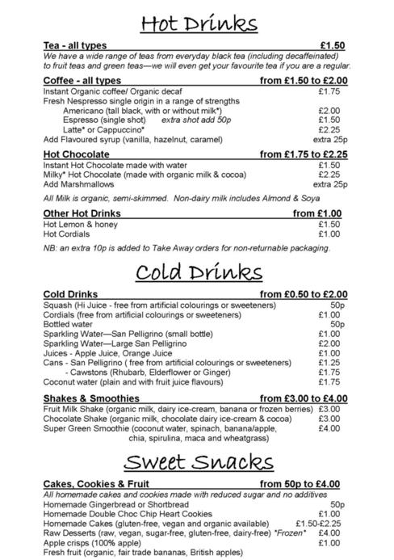
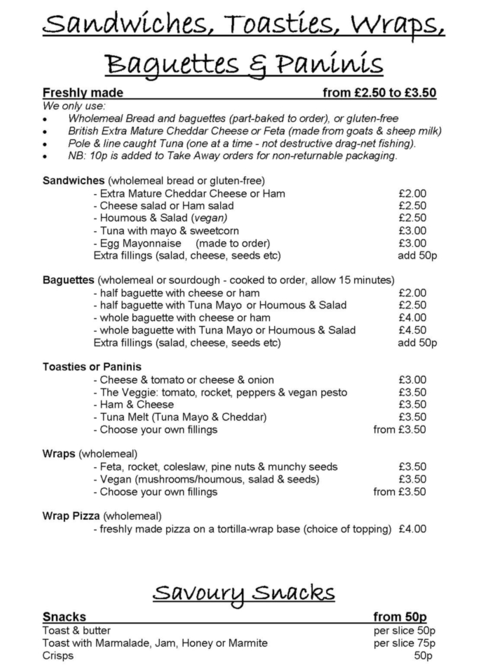
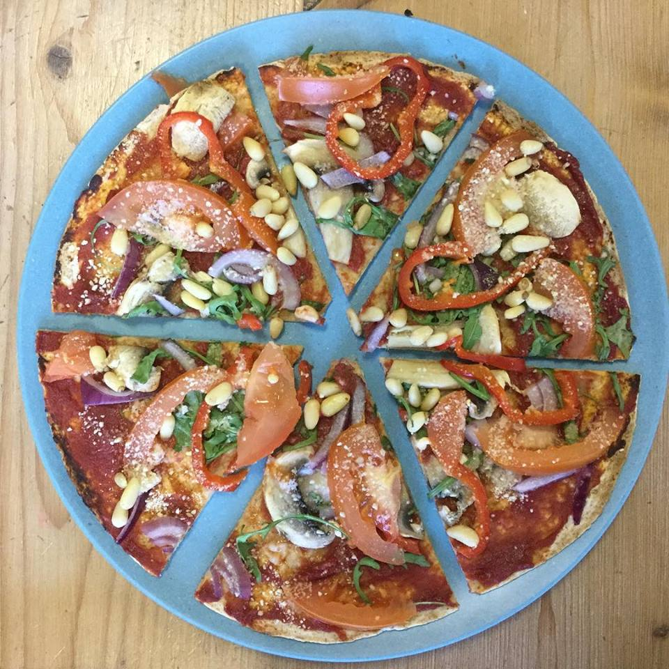
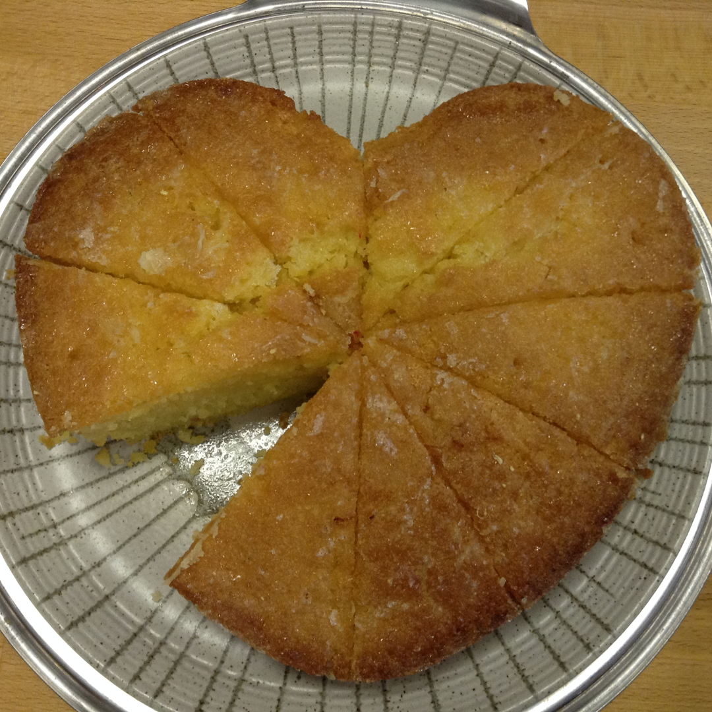
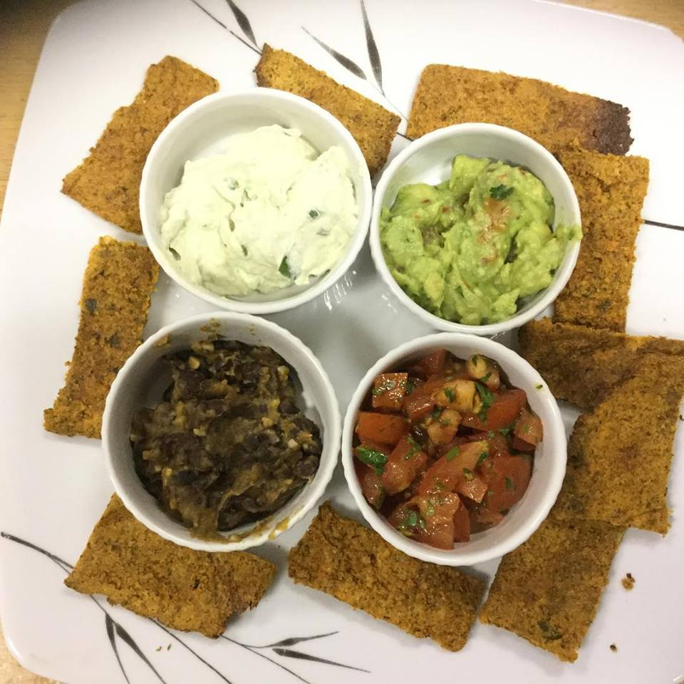

OUR MENU



The mix and match mezze
-
Choose pots of dips, dippers, nibbles and salads to create a mezze platter for yourself or to share
-
Each item is priced from £1-£2.50
-
Vegan, Vegetarian and Gluten-Free items available



* SPECIALIST FOODS *
We understand that there are many people who, through medical reasons or choice, require a specialist diet. Therefore we ensure there is always food available for those who are:
DAIRY-FREE - soya or almond milk alternatives are always available, as well as dairy-free spread.
CLICK GLUTNE-FREE FOR LIST OF ITEMS
GLUTEN-FREE - We always have at least one cake available that is glutn-free as well as gluten-free bread. Plus:
- Baked potato with any filling (winter season)
- Vegan curry or chilli (with baked potato or stir-fry rice noodles, * when available *
- Bean stew
- All our Home-Made soups are vegan and gluten-free
- Raw vegan desserts (kept in the freezer)